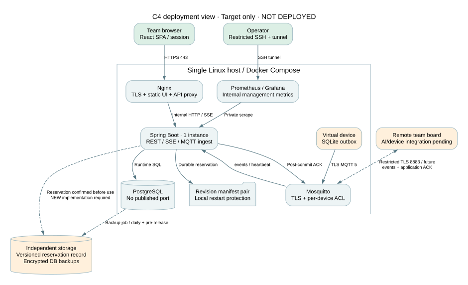

배포·운영 설계 — 팀이 먼저 읽을 내용
2026-11-16 · 제품 v1.43 유지 · M5 설계 완료, 운영 구현·배포는 미완료
어떤 형태로 공개하나요?
Linux 서버 한 대에서 실행하고, 팀원은 같은 HTTPS 주소로 로그인합니다. React 정적 파일은 Nginx가 제공하고, API와 실시간 SSE는 Spring Boot로 전달합니다. PostgreSQL과 MQTT 브로커는 외부에 직접 공개하지 않습니다. 첫 공개는 가상 장치 기반이며 실물 보드는 나중에 연결합니다.

그림을 크게 열기 ↗| 결정 | 이번 기준 |
|---|---|
| 실행 방식 | 기존 Docker Compose·Nginx·Spring Boot·PostgreSQL·Mosquitto 유지. 백엔드 인스턴스 1개 |
| 서버 | Linux x86_64, 2 vCPU·RAM 4 GiB·SSD 40 GiB를 초기 시험 크기로 사용. 성능 보장·구매 확정이 아니며 모니터링 포함 부하를 측정해 조정 |
| 첫 공개 | 팀원 로그인·구역 현황·이력 조회. 가상 장치 실행 중임을 표시 |
| 공개 포트 | HTTPS 443. 인증서 발급/갱신·리다이렉트용 80. SSH 22는 관리자 접속망 제한 |
| MQTT | 서버 내부에서도 TLS와 계정·토픽 권한 사용. 외부 8883은 실제 보드 연동 때 별도 개방 |
| 운영 관찰 | Spring Actuator/Micrometer → Prometheus → Grafana. 관리 화면은 SSH 터널로 접속 |
| 배포 방식 | 검증된 커밋의 이미지 사용, 수동 배포. main push가 곧 운영 자동 배포가 되지는 않음 |
| 복구 | DB 백업과 별도로 최신 revision 예약 기록을 호스트 밖에 보관. 복원 뒤 대조·인수 전에는 서비스 차단 |
초기 서버 크기는 한 구역·소수 팀원을 위한 설계 가정이다. 클라우드 업체·월 비용은 아직 결정하지 않았고 자원을 생성하지 않았다. 단일 서버이므로 서버 장애 동안 서비스가 중단될 수 있다.
지금 무엇이 부족한가요?
| 실제 코드에서 확인한 상태 | 다음 구현 |
|---|---|
MQTT 수신 설정이 mqtt-ingest-local에 묶여 있고 인증 설정이 없음 |
공통 수신 로직을 유지하면서 운영 TLS·계정 설정 추가 |
| 로컬 DB 계정으로 Flyway와 업무 SQL 실행 | 마이그레이션·서비스·계정 관리·백업 계정 분리 |
| Actuator는 health만 공개 | 내부 관리 포트·업무 지표·대시보드·알림 구현 |
| revision 파일 두 개가 같은 호스트에 있음 | 최신 예약 상한의 독립 보관·재해 복구 검증 |
| 신규 초기화와 불일치 중단은 있음 | 기존 데이터 인수·백업 복원 전용 절차 구현 |
현재 인계 Compose의 포트를 외부로 열어 운영판으로 사용하지 않는다. 이번 작업은 설계·설정 입력 양식·검증 기준을 작성한 것이며 운영 프로필과 복원 도구를 구현한 것은 아니다.
어떤 순서로 구현하나요?
| 순서 | 산출물 | 완료 판단 |
|---|---|---|
| O1 | 운영 프로필·DB 권한·MQTT TLS/ACL | 잘못된 인증서·계정·타 장치 토픽 거부, 기존 수신 회귀 통과 |
| O2 | 배포 Compose·Nginx·비밀값 주입 | 로컬 시험 HTTPS에서 로그인·SSE·로그아웃, 내부 포트 비공개 |
| O3 | 모니터링 | 장애를 실제로 발생시켜 연결·DB·ACK·디스크 경보 확인 |
| O4 | 백업·기존 상태 인수·복원 | 오래된 DB·파일 유실·중간 종료에 대한 격리 복원 시험 통과 |
| O5 | 실제 서버 배포·팀원 인수 | 외부 PC에서 HTTPS 로그인·상태 갱신·계정 회수 확인 |
O1~O4는 AI 담당자 회신 없이 시작할 수 있다. 운영 프로필 구현부터 진행하고 외부 공개는 O4 검증 뒤에 한다. 실제 서버 입력이 확보되면 O2와 서버 준비를 병행한다.
용현님에게 필요한 입력
입력 양식에 비밀값 없이 다음 네 가지를 기록한다.
- 사용할 수 있는 서버가 있는지, 없다면 허용할 월 비용 상한
- 사용할 도메인과 DNS 변경 권한 유무
- 서버와 별개로 백업·revision 기록을 보관할 저장소와 접근 권한
- 운영 알림을 받을 경로와 담당자
서버·계정 비밀번호나 토큰은 양식에 적지 않는다. 알려지지 않은 값은 null로 남기며, 양식이 채워져도 실제 자원 생성이나 외부 공개가 자동 실행되지는 않는다.